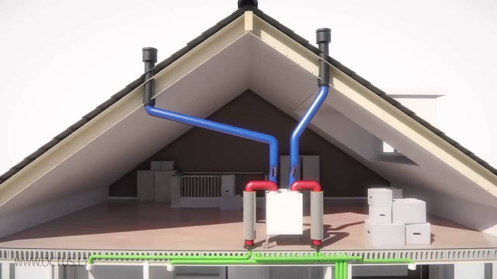
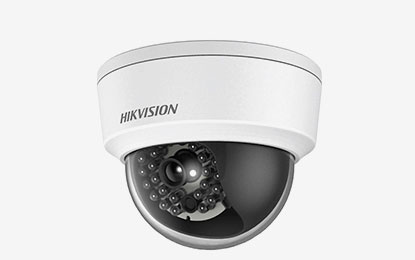

Techninė įranga | UCS
2020.10.29 07:52

Turite klausimų?
Spauskite čia! Sprendimai Maitinimo įstaigoms r_keeper_7 Savitarnos kasa kioskas EcoPOS StoreHouse V4 r-keeper_Delivery Sveikatingumo ir pramogų sektoriui Gymgest Viešbučiams ir moteliams ericsoft Hotel 4° SimpleBooking Praėjimo kontrolė ir darbo laiko apskaita ZKTeco Savivaldybėms ir mokykloms Neformalaus ugdymo apskaita Valgyklos apskaita UPAY Praėjimo kontrolė Moksleivių pavėžėjimo apskaita Moduliai Paslaugos Serviso paslaugos IT priežiūra ir remontas Lojalumo kortelių gamyba Įrangos nuoma Techninė Įranga Apie mus Naujienos Klientai Partneriai Įgyvendinti projektai Kontaktai Administracija: +370 5 210 7247 Visą parą dirbanti serviso linija: +370 700 55 051 Klientams Elektroninė klientų aptarnavimo sistema Serviso pagalba per nuotolį UCS Techninė Įranga POS terminalai Spausdintuvai Kasos aparatai Svarstyklės Fiskaliniai moduliai Delninukai Pinigų stalčiai Vaizdo stebėjimo sistemos Turniketai, praėjimo varteliai Pinigų detektoriai Padavėjų iškvietimo mygtukai Kita įranga Eksploatacinės medžiagos
Techninė Įranga
XPOS
AerTAB
AerPPC
Pinigų stalčius FT4617
Tai iš viršaus atsidarantis pinigų stalčius, kurį galima įmontuoti į stalą. Taip stalčiumi daug patogiau naudotis, sutaupoma vietos prie kasos, be to, vizualiai jis atrodys daug geriau.
RASO-12
Šis rinkinys orientuotas į pardavimo vietas, kuriose pardavėjas nebūna vienoje vietoje ir dažnai priėjęs prie pirkėjo nebeturi galimybės grįžti prie kasos aparato.
iPad Mini
iPad Mini yra ne tik mažas, lengvas bei kompaktiškas, bet ir labai spartus. Nešiojamasis terminalas, skirtas tiek padavėjams, tiek ir klientams.
Kameros
Vaizdo stebėjimo sistemos restoranams, barams, sporto klubams
Turniketai
Turniketai skirti lankytojų srautų valdymui ir kontrolei.
Kasos juostos
Norėdami užsisakyti eksploatacines prekes, prisijunkite prie UCS Baltic elektroninės klientų aptarnavimo sistemos.
Užsakius prekes jos bus pristatytos tą pačią arba kitą darbo dieną.
Jeigu kils neaiškumų, prašome skambinti telefonu 8 700 55051.
Kitos prekės
Norėdami užsisakyti eksploatacines prekes, prisijunkite prie UCS Baltic elektroninės klientų aptarnavimo sistemos.
Užsakius prekes jos bus pristatytos tą pačią arba kitą darbo dieną.
Jeigu kils neaiškumų, prašome skambinti telefonu 8 700 55051.
Padavėjų iškvietimo mygtukai
Padavėjo iškvietimo mygtukai – itin patvarus sprendimas, gerinantis klientų aptarnavimo laiką ir kokybę.
LQ800M
Stalčius, pritaikytas euro valiutos banknotams.
1 2 Sekite mus
socialiniuose tinkluose:
Servisas visą parą:
8 700 55 051
Informacijos telefonas:
+370 5 210 7247
Parašykite pardavimų skyriui:
sales@ucs.lt
UAB "UCS Baltic".
Ulonų g. 5, LT-08240, Vilnius
Tel. +370 5 210 7247
Rašykite mums info@ucs.lt
Kitos UCS grupės įmonės:
www.ucs.lv
www.ucs.ee
Administracija: +370 5 210 7247
Klientams:
Elektroninė klientų aptarnavimo sistema
Serviso pagalba per nuotolį × Trūksta informacijos? Reikia konsultacijos? Norite įsigyti? Susisiekite! Užpildykite pateiktą formą ir mūsų konsultantai su Jumis netrukus susisieks. Šioje svetainėje mes naudojame slapukus tam, kad gautumėme mums svarbią informaciją apie lankytojų skaičių bei pateiktumėme Jus dominantį turinį. Daugiau sužinosite čia Gerai
- Techninė įranga | UCS
- Techninė įranga „Porsche Tequipment Genuine Access ...
- Techninė įranga - BTT Cloud
- KĄ DARYTI, KAI ESATE APGAUTI INTERNETE - TECHNINĖ ĮRANGA ...
- Techninė įranga – ELIP (Enciklopedija Lietuvai ir pasauliui)
- Techninė įranga - Wikiwand
- KĄ REIŠKIA „SAAS“? - TECHNINĖ ĮRANGA - 2020
- Mažmeninė techninė įranga - BS/2
- Techninė įranga | Egledagyte's Blog
- Techninė Įranga | September 2020
- Techninė įranga | UCS
Mažmeninė techninė įranga Tai „Diebold Nixdorf“ atsiskaitymo kasos ir POS sistemos „Beetle“, periferiniai įrenginiai (spausdintuvai, skeneriai, elektroniniai kainynai, grynųjų pinigų saugyklos), banknotų priėmimo automatai, savitarnos kasos ir mokėjimo sistemos („PayTower“), taros priėmimo automatai („Revendo“) ir kt.
- Techninė įranga „Porsche Tequipment Genuine Access ...
Techninė įranga „Porsche Tequipment“ kuriama pasitelkus per 20 metų sukauptą patirtį ir žinias, todėl jai būdinga viena – „Porsche“ įprasta kokybė. Ji kuriama įsivaizduojant visą automobilį, tačiau idealiai pritaikant jūsų „Porsche“. Šiuos aukštos kokybės produktus lengvai pritaikysite savo „Porsche ...
- Techninė įranga - BTT Cloud
Techninė įranga- tai kompiuterių aparatinė įranga, kurios pagalba mes gebame "bendrauti" su progr. įranga. Paprastai techninę įrangą sudaro tokie komponentai: monitorius, centrinis korpusas, klaviatūra, pelė, spausdintuvas ir t.t. Monitorius- tai įrenginys, kurio pagalba mes "matome" tai, ką mums atvaizduoja programinė įranga.
- KĄ DARYTI, KAI ESATE APGAUTI INTERNETE - TECHNINĖ ĮRANGA ...
Techninė Įranga. Kas yra DCIM failas? 2020; Jei fotografavote tik kino kameromi, labai tikėtina, kad niekada nepamatyite DCIM failo. Telefonų u fotoaparatai populiarėjant, labiau tikėtina, kad šių failų neraite. Kadangi gamintojai gamina tiek d...
- Techninė įranga – ELIP (Enciklopedija Lietuvai ir pasauliui)
Techninė įranga (aparatinė įranga, angl. hardware, pranc. matériel) informacinėse technologijose – informacijos apdorojimo sistemos fizinių komponentų visuma arba tos visumos dalis. Kompiuterių techninė įranga apima ir visas fizines kompiuterio dalis, bet ne programinę įrangą, valdančią šias dalis.
- Techninė įranga - Wikiwand
techninė įranga (Informatika) - informacijos apdorojimo sistemos fizinių komponentų visuma arba tos visumos dalis. Pvz. kompiuteriai, išoriniai įrenginiai. Žodžių junginį sudaro žodžiai: techninė; įranga; Vertimai
- KĄ REIŠKIA „SAAS“? - TECHNINĖ ĮRANGA - 2020
Techninė įranga informacinėse technologijose – informacijos apdorojimo sistemos fizinių komponentų visuma arba tos visumos dalis.[1] Kompiuterių techninė įranga apima ir visas fizines kompiuterio dalis, bet ne programinę įrangą, valdančią šias dalis.
- Mažmeninė techninė įranga - BS/2
Verslo procesų automatizavimo techninė įranga: POS terminalai, spausdintuvai, kasos aparatai ir kita techninė įranga individualiems verslo poreikiams.
- Techninė įranga | Egledagyte's Blog
Techninė įranga. Skaitmeniniai nivelyrai; Trimble TDC100; Trimble X7; Trimble X7; Trimble X7; Trimble SiteVision; DJI Phantom 4 RTK; DJI Phantom 4 RTK; Bepiločiai orlaiviai. DJI Matrice 300 RTK; DJI Phantom 4 RTK; DJI Mavic 2 Enterprise; DJI Phantom 4 Multispektrinis; DJI Matrice 200/210 serija;
- Techninė Įranga | September 2020
„Software as a Service“ (SaaS) yra procesas, kurio metu programinė įranga teikiama iš anksto nustatytu prenumeratos pagrindu; paprastai kas mėnesį ar kasmet. Štai ką reikia žinoti apie „SaaS“ platformą.
Mažmeninė techninė įranga Tai „Diebold Nixdorf“ atsiskaitymo kasos ir POS sistemos „Beetle“, periferiniai įrenginiai (spausdintuvai, skeneriai, elektroniniai kainynai, grynųjų pinigų saugyklos), banknotų priėmimo automatai, savitarnos kasos ir mokėjimo sistemos („PayTower“), taros priėmimo automatai („Revendo“) ir kt.
Techninė įranga „Porsche Tequipment“ kuriama pasitelkus per 20 metų sukauptą patirtį ir žinias, todėl jai būdinga viena – „Porsche“ įprasta kokybė. Ji kuriama įsivaizduojant visą automobilį, tačiau idealiai pritaikant jūsų „Porsche“. Šiuos aukštos kokybės produktus lengvai pritaikysite savo „Porsche ...
Techninė įranga- tai kompiuterių aparatinė įranga, kurios pagalba mes gebame "bendrauti" su progr. įranga. Paprastai techninę įrangą sudaro tokie komponentai: monitorius, centrinis korpusas, klaviatūra, pelė, spausdintuvas ir t.t. Monitorius- tai įrenginys, kurio pagalba mes "matome" tai, ką mums atvaizduoja programinė įranga.
Techninė Įranga. Kas yra DCIM failas? 2020; Jei fotografavote tik kino kameromi, labai tikėtina, kad niekada nepamatyite DCIM failo. Telefonų u fotoaparatai populiarėjant, labiau tikėtina, kad šių failų neraite. Kadangi gamintojai gamina tiek d...
Techninė įranga (aparatinė įranga, angl. hardware, pranc. matériel) informacinėse technologijose – informacijos apdorojimo sistemos fizinių komponentų visuma arba tos visumos dalis. Kompiuterių techninė įranga apima ir visas fizines kompiuterio dalis, bet ne programinę įrangą, valdančią šias dalis.
techninė įranga (Informatika) - informacijos apdorojimo sistemos fizinių komponentų visuma arba tos visumos dalis. Pvz. kompiuteriai, išoriniai įrenginiai. Žodžių junginį sudaro žodžiai: techninė; įranga; Vertimai
Techninė įranga informacinėse technologijose – informacijos apdorojimo sistemos fizinių komponentų visuma arba tos visumos dalis.[1] Kompiuterių techninė įranga apima ir visas fizines kompiuterio dalis, bet ne programinę įrangą, valdančią šias dalis.
Verslo procesų automatizavimo techninė įranga: POS terminalai, spausdintuvai, kasos aparatai ir kita techninė įranga individualiems verslo poreikiams.
Techninė įranga. Skaitmeniniai nivelyrai; Trimble TDC100; Trimble X7; Trimble X7; Trimble X7; Trimble SiteVision; DJI Phantom 4 RTK; DJI Phantom 4 RTK; Bepiločiai orlaiviai. DJI Matrice 300 RTK; DJI Phantom 4 RTK; DJI Mavic 2 Enterprise; DJI Phantom 4 Multispektrinis; DJI Matrice 200/210 serija;
„Software as a Service“ (SaaS) yra procesas, kurio metu programinė įranga teikiama iš anksto nustatytu prenumeratos pagrindu; paprastai kas mėnesį ar kasmet. Štai ką reikia žinoti apie „SaaS“ platformą.
 